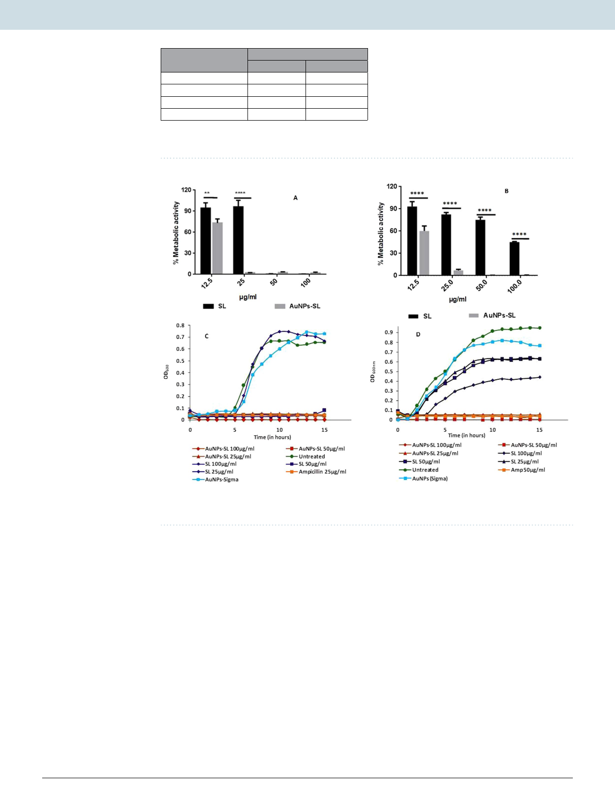

www.nature.com/scientificreports/
www.nature.com/scientificreports
Samples
AuNPs from Sigma
AuNPs-SL
SL
Ampicillin (50 µg/ml)
Zone of inhibition (in mm)
S. aureus
V. cholerae
0
0
15
15
15
0
28
8
Table 1. The antimicrobial activity of AuNPs-SL by agar diffusion method against gram positive Staphylococcus
aureus and gram negative Vibrio cholerae.
Figure 2. Antimicrobial activity of AuNPs-SL by XTT Assay and effect on growth kinetics against S. aureus
(A,C) & V. cholerae (B,D). Bar graph (A,B) was analyzed using Two-way ANOVA, *P value < 0.01.
the colour change34. For S. aureus (Fig. 2A), MIC value was found to be either equal or twofold lower for SL
(25–50 µg/ml) than AuNPs-SL (25 µg/ml). Contrary to this, V. cholerae remains viable even at 200 µg/ml of SL (the
highest concentration used in assay). Interestingly, MIC of AuNPs-SL against V. cholerae (Fig. 2B) was 25 µg/ml
and that is highly significant in comparison to sophorolipids. Interestingly, AuNPs-SL has shown higher efficacy
against both the microbes with especial potency against Gram negative V. cholerae. Therefore, the efficiency of
AuNPs-SL was further assessed against other Gram negative bacteria, E. coli that showed MIC at 12.5 µg/ml
(Supplementary Fig. S2).
Growth kinetics. To further test cell viability in time-dependent manner, growth kinetics was also performed
against S. aureus and V. cholerae at a different concentration (25, 50 and 100 µg/ml) for 15 h. Similar to XTT assay,
the growth curve analysis also showed that sophorolipid has either equal or twofold lower activity than gold nan-
oparticles (Fig. 2C). At the highest concentration of SL (100 µg/ml) used against V. Cholerae in growth kinetics
study, there is extended lag phase was observed whereas nanoparticles AuNPs-SL inhibited its growth even at
25 µg/ml (Fig. 2D). AuNPs-Sigma had no effect on growth of either of the microbes and has a similar trend of
growth as of untreated cells.
Since AuNPs-SL has shown higher activity against V. Cholerae as comparison to SL. Therefore time dependant
kill assay was performed only for V. Cholerae. We observed initial drop of cell density as comparison to untreated
one that further recovered after certain time span (Supplementary Fig. S3). This observation suggested that SL
imposes some stress due to its surfactant property to these cells that are recovered soon.
Scientific Reports | (2020) 10:1463 | https://doi.org/10.1038/s41598-019-57399-3
4